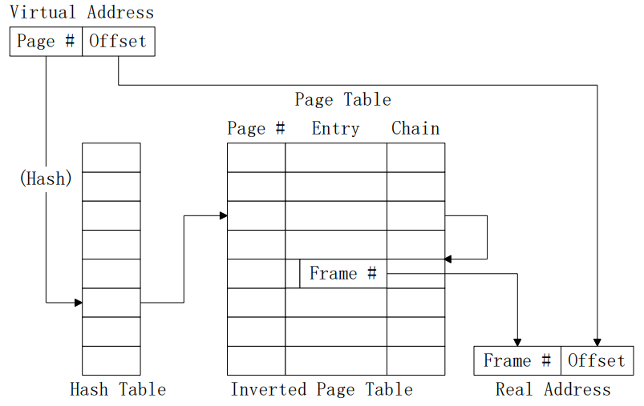

操作系统内存管理方式复习
前置知识
大小尾端
大尾端
所谓的大端模式，就是高位字节排放在内存的低地址端，低位字节排放在内存的高地址端。
所谓的小端模式，就是低位字节排放在内存的低地址端，高位字节排放在内存的高地址端。
举个例子，比如对于0x12345678
- 大端模式： $$\eqalign{ & address:00 \cdot 01 \cdot 02 \cdot 03 \cr & thValue:12 \cdot 34 \cdot 56 \cdot 78 \cr} $$
- 小端模式：
$$\eqalign{
& address:00 \cdot 01 \cdot 02 \cdot 03 \cr
& thValue:78 \cdot 56 \cdot 34 \cdot 12 \cr} $$
记忆方式
- 记忆一：地址从低到高，符合一般认知的数字排列方式是大端。
- 记忆二：小段高位对高地址，低位对低地址。
作业
作业是用户需要计算机完成的某项任务，是要求计算机所做工作的集合。进程
进程包括程序和程序处理对象（数据集），是一个程序对某个数据集的执行过程。程序
程序是静止的，是存放在磁盘上的可执行文件。区别与联系
区别
- 进程是竞争计算机系统有限资源的基本单位，有自己的生存周期，可以创建其他进程，是程序在处理机上一次执行的过程，是动态的概念。
- 程序只是一个存在与磁盘上的可执行文件，是一个静态概念。
- 任务是用户向计算机提交任务的任务实体，包括作业提交、作业收容、作业执行和作业完成。作业执行需要进程完成，整体作业的完成离不开一个个程序。
联系
- 每个进程可以运行多个程序。
- 每个作业可能需要多个进程完成。
- 每个程序可以被多个进程执行。
- 一个作业通常包括程序、数据和操作说明书3部分。
- 每一个进程由进程控制块PCB、程序和数据集合组成。
- 这说明程序是进程的一部分，是进程的实体。因此，一个作业可划分为若干个进程来完成，而每一个进程有其实体——程序和数据集合。
页式内存管理
实现结构
页
在分页存储管理系统中，把每个作业的地址空间分成一些大小相等的片，称之为页面（Page）或页，各页从0开始编号。
存储块
在分页存储管理系统中，把主存的存储空间也分成与页面相同大小的片，这些片称为存储块，或称为页框（Frame），同样从0开始编号。
页表
为了便于在内存找到进程的每个页面所对应块，分页系统中为每个进程配置一张页表，进程逻辑地址空间中的每一页，在页表中都对应有一个页表项。
页表寄存器
页表的基址及长度由页表寄存器给出。
物理块管理表
描述物理内存空间的分配使用状况。
地址划分
逻辑地址
物理地址
地址变换流程
前置知识
解析逻辑地址
给定逻辑地址A，如何求出其页号和偏移量？
2进制/8进制/16进制
直接根据地址划分截取对应位进行转换即可。
10进制
设逻辑地址为va,每一页大小为m,则页号(pagenum)为：
$$pagenum = \left\lfloor {{{va} \over m}} \right\rfloor $$
偏移量(offset)为：
$$offset = va\% m$$
页表查找

图示
文字
- 将虚拟地址用之前的方法转换出页号和偏移地址。
- 将页号与页表寄存器中的页表长度进行比较，超过长度就产生越界中断。
- 结合页表寄存器的基地址、页号、表项长度查询页表，得到对应的页表项，具体公式为: $$destnation = pgdir + pagenum*(entry\_size)$$
- 从页表项中取出物理块号
- 将物理块号拼接偏移地址得到实际物理地址，进行访问。
改进
多级页表
一级页表，在物理空间中需要连续的地址存储，且需要一次性给够空间，所以对于逻辑地址较大的设备，页表会很长，为它找这么大的空间是很难且没必要的。因此引入多级页表，只放入页目录，需要页表时再调入内存，且不需要连续的地址存储
图示

访问方式
哈希页表
对页号进行哈希处理，根据哈希值直接查表，对于碰撞的处理用链表解决。
反置页表
页表按照物理块组织，即表项一是第一个物理块，表项二是第二个物理块……
查询方式
用进程标志符和页号去检索反置页表，进行遍历检索，直到表尾或者找到某一项的值对应上，然后这个表项为第几项说明物理块就是第几块。
哈希优化
通过哈希表(hash table)查找可由逻辑页号得到物理页面号。虚拟地址中的逻辑页号通过哈希表指向反置页表中的表项链头（因为哈希表可能指向多个表项），得到物理页面号。

段式内存管理
实现结构
段表
表项
段表寄存器
组成
地址变换流程
图示
文字
- 将逻辑地址中的段号 S 与段表长度TL 进行比较。判断合法性
- 根据段表的始址和该段的段号，计算出该段对应段表项的位置，从中读出该段在内存的始址。
- 再检查段内地址 d，是否超过该段的段长 SL。判断合法性。
- 则将该段的基址与段内地址 d 相加，即可得到要访问的内存物理地址。
特点
- 二维：段长和段起始位置
- 共享公用子程序易实现。
- 对子程序的信息保护易实现。
- 便于动态增长
- 便于动态链接
- 用户参与，用户知道段表的结构
- 地址变换比较复杂，费时
- 管理困难
- 分段最大尺寸受主存限制
段页式内存管理
定义
用分段方法来分配和管理虚拟存储器，而用分页方法来分配和管理实存储器
实现结构
一个进程对应一个段表、一个段对应一个页表。
地址变换流程
图示
文字
- 将段号与段表长度进行比较，若段号大于或等于段表长度，产生越界中断。
- 利用段表始址与段号得到该段表项在段表中的位置。取出该段的页表始址和页表长度。
- 将页号与页表长度进行比较，若页号大于或等于页表长度，产生越界中断。
- 利用页表始址与页号得到该页表项在页表中的位置。
- 取出该页的物理块号，与页内地址拼接得到实际的物理地址。
缺陷
以上的所有内存管理都需要一次性一个作业的所有内容装入后才能运行，作业装入后需要一直存在于内存中，直至结束，覆盖和交换所起效果也有限，需要引入一种全新的解决方法———虚拟存储管理。
虚拟存储管理
理论前提
局部性原理
- 时间局部：一条指令被执行，一个数据被访问，一般都只集中于一定时间内。
- 空间局部：当前一段时间内访问的指令或者数据一般都只集中于一定区域内。
基本原理
- 在程序装入时，不必将其全部读入到内存，而只需将当前需要执行的部分页或段读入到内存，就可让程序开始执行。
- 执行过程中，如果发生缺页，再通过中断调入内存
- 执行过程中，可以将暂时不访问的页或段调出内存，需要时再调入。
特点
- 提供了一个很大的地址空间和内存
- 虚拟内存把主存作为磁盘的高速缓存，在主存和磁盘之间根据需要来回传送数据，高效地使用了主存
- 获得了一个不超过外存交换区和主存内存之和大小的“内存”
与覆盖交换对比
覆盖
- 借鉴之处：学习了覆盖不用将程序的所有内容都调入内存的思想，只保留程序的一部分在内存中。
- 创新之举：不再需要用户维护，由操作系统自行维护。
交换
- 借鉴之处：学习了交换将内容换出到外存以节约内存的思想。
- 创新之举：相比于交换粒度更细，交换一般交换整个程序，虚拟存储交换程序中的某些页面。
页面置换策略
最优置换
从主存中移出永远不再需要的页面，如无这样的页面存在，则应选择最长时间不需要访问的页面。
先进先出
最简单的页置换算法，操作系统记录每个页被调入内存的时间，当必需置换掉某页时，选择最旧的页换出。
Belady现象
在使用FIFO算法作为缺页置换算法时，分配的缺页增多，但缺页率反而提高，这样的异常现象称为belady Anomaly。
就是原来有5页物理页，让你做文章，现在变成6页了，理论上应该缺页会少一点，但在先进先出下反而多了。
Second Chance
如果被淘汰的数据之前被访问过，则给其第二次机会。
就是给一个标志位，标志放入队列后是否又被再次访问，如果有，淘汰时，如果本来是要淘汰它，就给它一次机会，把它移到队尾，清除标志位。
Clock算法
通过一个环形队列，避免将数据在FIFO队列中移动。二次机会的改进。
和Second Chance一样，但是给一个指针代表指向队列头，以后移动指针就相当于将某一元素移到了队尾。
最近最少使用（LRU）
如果数据最近被访问过，那么将来被访问的几率也更高。所以淘汰最近最久未使用的页面。
老化算法（AGING）
LRU算法开销很大，硬件很难实现。老化算法是LRU的简化，但性能接近LRU
淘汰时淘汰从左往右0最多的。
工作集和驻留集
概念定义
- 工作集：当前正在使用的页面的集合。
- 驻留集：虚拟存储系统中，每个进程驻留在内存的页面集合，或进程分到的物理页框集合。
引入目的
系统应当为每个活跃进程分配多少个页框？ - 分配太少，缺页中断率太高，你是在跑程序还是在搞中断?
- 分配太多，主存干脆就跑你一个程序好了，别并发了。
所以要依据进程在过去的一段时间内访问的页面来调整驻留集大小。
初始分配策略
- 等分法：根据现有的进程平分物理块。
- 比例法：分给进程的块数=进程地址空间大小 / 全部进程的总地址空间 * 可用块总数
- 优先权法：优先级高的多分点，优先级低的少分点
可选分配策略
- 固定分配策略：为每个活跃进程分配固定数量的页框。
- 可变分配策略：首先分配一定的数量，然后根据运行时的缺页率动态调整。
可选置换策略
- 局部置换策略：系统在进程自身的驻留集中判断当前是否存在空闲页框，并在其中进行置换。
- 全局置换策略：在整个内存空间内判断有无空闲框，并允许从其它进程的驻留集中选择一个页面换出内存
可选组合策略
没有固定全局策略，固定只能和局部玩，因为你和全局玩了，你拿了别人的页面，你就不固定了。
抖动问题
君可知抖？
进程缺页率急剧上升频繁调页使得调页开销增大。
君何故抖?
驻留集小于工作集。
君如何医？
- 采用局部置换策略，你抖你自己抖，别抢别人的页面大家最后一起抖。
- 引入工作集算法，根据工作集大小避免将驻留集缩小到工作集下。
- 预留部分页面。
- 挂起若干进程。
负载控制
智能挂起或引入进程，最大化CPU利用。
负载准则
L=S准则
通过调整多道程序的度，使发生两次缺页之间的平均时间（L）等于处理一次缺页所需要的平均时间（S）
50%准则
分页单元的利用率保持在50%左右。
零散知识
页面缓冲算法
用FIFO算法选择被置换页，把被置换的页面放入两个链表之一。即：如果页面未被修改，就将其归入到空闲页面链表的末尾，否则将其归入到已修改页面链表。
双指针轮转置换算法
该算法利用页面表上的几个指针维护一个空闲页面表。当空闲页面数少于一定阈值时，该算法置换一些页面加入空闲页面表。